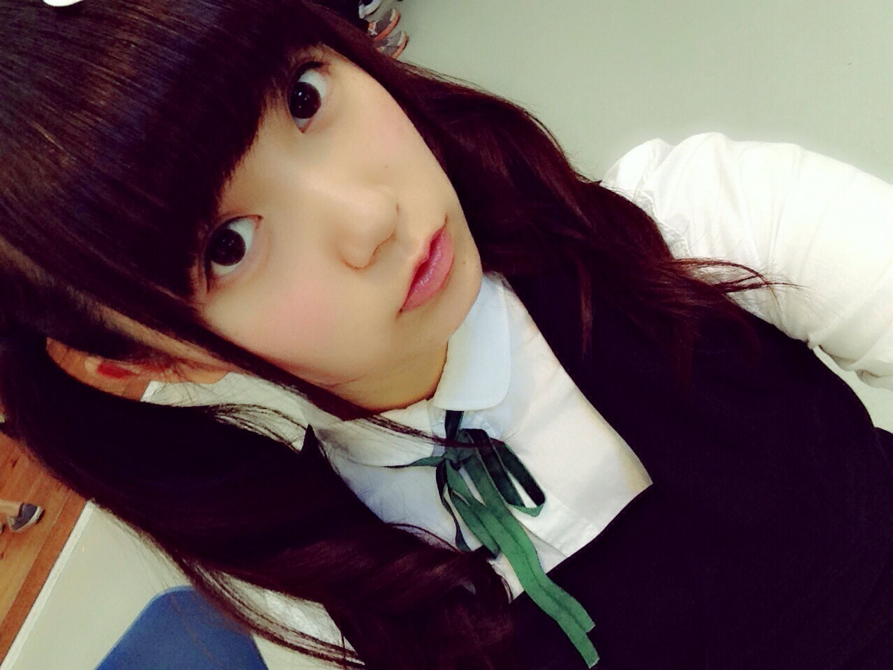
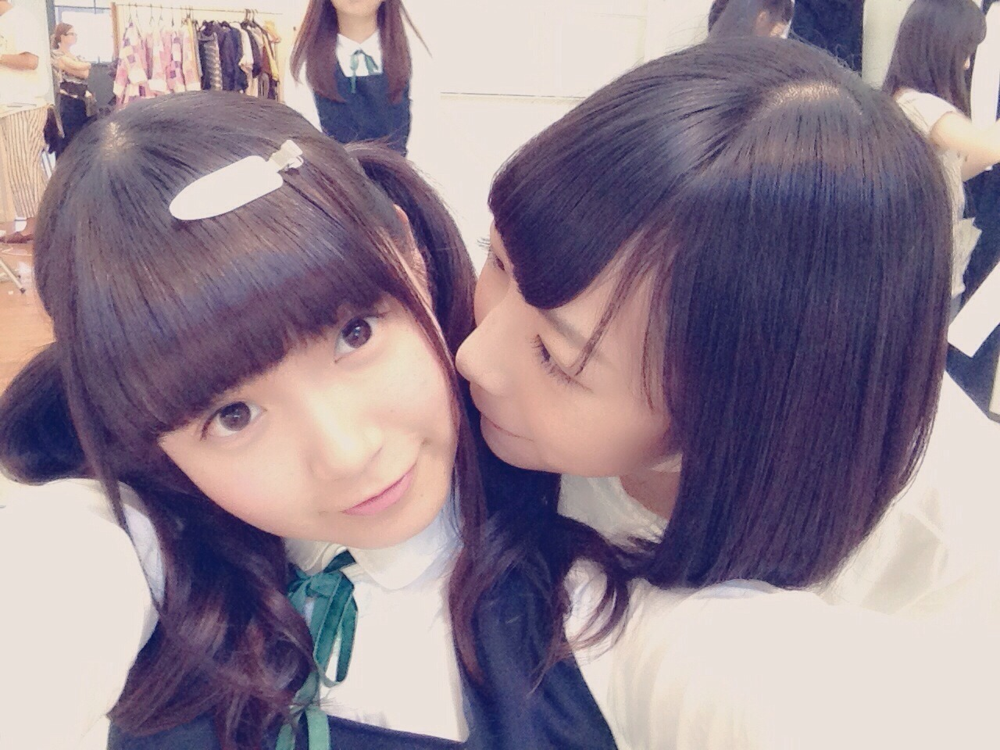
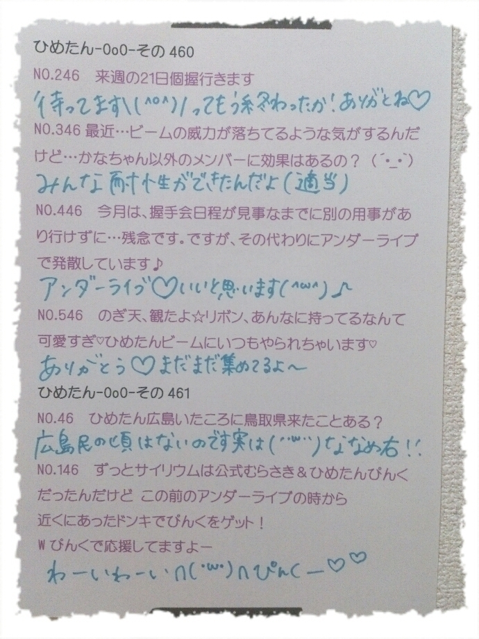

| 2014/10 08 Wed | ひめたん-OoO-その486 |

本日10thシングル
「何度目の青空か？」発売！
無事に今日を迎えることができたのは
本当にみなさんのおかげです
ありがとうございます(；ω；)
10thは いくちゃんセンター
復帰してから今日まで頑張っている姿を
隣で見てきたからこそ
今回のシングルはたくさんの方に
聴いていただきたいと思います！
それと、乃木坂には60曲あるけど
中3組みんな揃って歌う曲は
実は「私、起きる。」が初めて♪
＊今回の参加楽曲＊
「私、起きる。」
(高校生10人ユニット)
「あの日 僕は咄嗟に嘘をついた」
(アンダー楽曲)
個人PVは 大山徹 監督に
撮っていただきました！
暖かい現場だった～＊
差し入れのシフォンケーキが
今まで食べた中で一番美味しかった♡♡
作品は観ていただけたらわかるんですが
まあいろんなことをしました\( ˆoˆ )/
お絵かきとかもしました～
観たよ～ってひとはぜひ
感想聞かせてほしいなっっ
ユニットは、いつも
お姉さんたちいいな～って
ずっと思っていたので
今回JKみんなで歌うことができて
嬉しい気持ち(＊＾ω＾＊)
ツギハギチェックメイト
よろしくね♡笑
アンダー楽曲はダンスがかっこよくて
「ここにいる理由」とはまた違った路線の
ダンスナンバーになっているのですが
MVは全てお芝居しているから
ライブやスタジオライブでみるまで
お楽しみってことかな♪
MVではガブリエル役を演じる役。
「あの日 僕は咄嗟に嘘をついた」
MVの制服\❁/


NOGIBINGO!3放送スタート(・ω・)
放送圏にお住まいのみなさん
観てくれましたかー？
今回のNOGIBINGO!3のテーマは
苦手を克服しよう～みたいな。
#1は1カットタイトルコール
難しかった～(>_<)
緊張とかプレッシャーとか！！
永島・堀・中元の常識クイズチームは
メガネチームがミス連発してる間
藤井アナと4人で雑談してました～＊
来週も出るよー観てねー
それから、NOGIBINGO!3公式サイトで
みなさんからの妄想を
募集してるみたいなんだけど
ひめたんあのコーナー
大好きなの♡♡
みんな～待ってるよ∩(・ω・)∩
アンダーライブも順調～
今日はゆみ姉、まいまい、かずみん、
ななせまる、若月、ちはる、みなみ
も遊びに来てくれたんだ♡
さゆが今日は
大事をとってお休みになったけど
気持ちは全員で踊ってます(っ´ω`c)
れなちさんも回復に向けて頑張ってるから
みんな応援よろしくね！
最初はミスなくできるかな～とか
不安なことが多くて
いっぱいいっぱいだったけど
今日はやっとリラックスして
ファンのみなさんと目合わせたりとか
きゅんきゅん王国民さんを探したりとか
できる余裕が生まれた(；ω；)♡
ぴんくのサイリウムとか
ひめたんタオルとかひめたんうちわとか
たくさん見えて元気になるよ～ありがとう！
明日は休演日ですが撮影がありまーす
がんばるぞー∩(・ω・)∩
応援しててねっ
のぎ天！街ブラ～♪
チーム秋葉原 レポ頑張ったよ♡♡
みて......にゃん？
パンダって何て鳴くの？

 ひめたーん。ずばり
ひめたーん。ずばり
アンダーライブのいいところはなんですか？
３文字で答えてください。
「一体感」
いや普段のライブでも当然感じるけど
アンダーライブでは一段と＊＊
ひめたんがプリンの次に
好きなスイーツな何ですか？
ミルフィーユ！
ショートケーキとかは日によって
あ～そんな気分じゃないーとか
なりそうだけど
ぷりんはいつどんな時でも美味しい～
ひめたんの乃木メール撮ってたら
いつの間にかひめたん推しに
なってたんだけど
このまま推してて大丈夫ですか？
きゅんきゅん王国入国ー♡♡
ふー( ´ ▽ ` )楽しい国だよ
国民さんはメルヘンなひと多いよ～
ひめたんって、
毎日何時に寝て何時に起きるの？
寝つき寝起きはいい方？
寝るのが遅い日でもはやく目覚めちゃう
寝起きはめちゃめちゃいいですよ～
寝つきは......うーーん( ˙Ο˙ )
ひめたんが好きな童話って何？
おやゆび姫！
ひめたんの日記の
コメント欄下２ケタに46を踏んだ方へ
手書きでコメ返するコーナー
＼ ひめたん46 ／

いつもたくさんのコメント
ありがとうございます！
前回は本当に多かったなあ(゜ω゜)
何効果？おでこ？おでこかなあ
ひめたんのでこ出し好きなので
ぜひこれからもやってください って声を
たくさんいただいていましたけれども
本当にやるつもりはないんだけど(笑)
でも反響に正直ちょっとびっくりしました
てことで考えておきます♡♡
あと円周率！
みんな結構知ってるんだね
なんで？天才なの？
最高で下68桁書いてくれてるひといた～
小6の おにゃのこだった♡
数字多すぎて思わず数えた(゜ω゜)
ちなみにひめたんの記憶の
奥底から引っ張り出した円周率は
下7桁目？から違ったみたい......しゅん
教えてくれたみんなありがとうねー♪
(＊´・ω・＊)
コメント(765)
2014/10/08 23:42